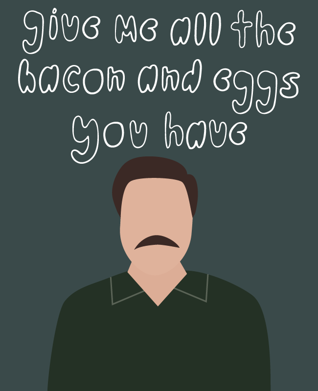

Parks and Rec Illustrations
About
Parks & Rec is my favorite show of all time. While rewatching it for the umteenth, I got the idea to do an illustration series of the main characters and their catchphrases. It was such a fun side project to work on to grow my illustration and lettering skills.
Process & Technology Used
Sketchbook, hand lettering, Photoshop, Illustrator.
Challenges Faced & Problems Solved
This was my first in-depth illustration project. It was a challenge to make sure the different illustrations felt like a cohesive series when viewed together. To accomplish this, I used consistent illustration and lettering styles and for each piece.
